소방설비기사(전기분야) (2014-05-25 기출문제)
1과목: 소방원론
1. 내화건축물과 비교한 목조건축물 화재의 일반적인 특징을 옳게 나타낸 것은?
- 고온, 단시간형
- 저온, 단시간형
- 고온, 장시간형
- 저온, 장시간형
(정답률: 89%)

2. 열전달의 대표적인 3가지 방법에 해당하지 않는 것은?
- 전도
- 복사
- 대류
- 대전
(정답률: 85%)
3. 가연성 가스의 화재 위험성에 대한 설명으로 가장 옳지 않은 것은?
- 연소한계가 낮을수록 위험하다.
- 온도가 높을수록 위험하다.
- 인화점이 높을수록 위험하다.
- 연소범위가 넓을수록 위험하다.
(정답률: 85%)
4. 화재에 대한 설명으로 옳지 않은 것은?
- 인간이 제어하여 인류의 문화, 문명의 발달을 가져오게 한 근본적인 존재를 말한다.
- 불을 사용하는 사람의 부주의와 불안정한 상태에서 발생되는 것을 말한다.
- 불로 인하여 사람의 신체, 생명 및 재산상의 손실을 가져다주는 재앙을 말한다.
- 실화, 방화로 발생하는 연소현상을 말하며 사람에게 유익하지 못한 해로운 불을 말한다.
(정답률: 90%)
5. 다음 중 인화점이 가장 낮은 물질은?
- 산화프로필렌
- 이황화탄소
- 메틸알코올
- 등유
(정답률: 61%)
6. 연기의 감광계수(m-1)에 대한 설명으로 옳은 것은?
- 0.5는 거의 앞이 보이지 않을 정도이다.
- 10은 화재 최성기 때의 농도이다.
- 0.5는 가시거리가 20~30m 정도이다.
- 10은 연기감지기가 작동하기 직전의 농도이다.
(정답률: 83%)
7. 소화를 하기 위한 산소농도를 알 수 있다면 CO2소화의 사용 시 최소 소화농도를 구하는 식은?
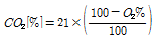
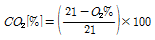
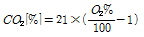
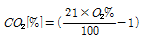
(정답률: 88%)
8. 다음 중 이산화탄소의 3중점에 가장 가까운 온도는?
- -48℃
- -57℃
- -62℃
- -75℃
(정답률: 70%)
9. 화재 시 발생하는 연소가스 중 인체에서 혈액의 산소운반을 저해하고 두통, 근육조절의 장애를 일의는 것은?
- CO2
- CO
- HCN
- H2S
(정답률: 88%)
10. 다음 중 조연성 가스에 해당하는 것은?
- 일산화탄소
- 산소
- 수소
- 부탄
(정답률: 88%)
11. 다음 중 가연물의 제거와 가장 관련이 없는 소화방법은?
- 촛불을 입김으로 불어서 끈다.
- 산불 화재 시 나무를 잘라 없앤다.
- 팽창 진주암을 사용하여 진화한다.
- 가스화재 시 중간밸브를 잠근다.
(정답률: 89%)
12. 다음 중 내화구조에 해당하는 것은?
- 두께 1.2cm 이상의 석고판 위에 석면 시멘트판을 붙인다.
- 철근콘크리트조의 벽으로서 두께가 10cm 이상인 것
- 철망모르타르로서 그 바름 두께가 2cm 이상인 것
- 심벽에 흙으로 맞벽치기 한 것
(정답률: 71%)
13. 소화작용을 크게 4가지로 구분할 때 이에 해당하지 않는것은?
- 질식소화
- 제거소화
- 기압소화
- 냉각소화
(정답률: 91%)
14. Halon 1211의 성질에 관한 설명으로 틀린 것은?
- 상온, 상압에서 기체이다.
- 전기의 전도성이 없다.
- 공기보다 무겁다.
- 짙은 갈색을 나타낸다.
(정답률: 69%)
15. 가연성 액체에서 발생하는 증기와 공기의 혼합기체에 불꽃을 대었을 때 연소가 일어나는 최저 온도를 무엇이라고 하는가?
- 발화점
- 인화점
- 연소점
- 착화점
(정답률: 73%)
16. 동식물유류에서 “ 요오드값이 크다” 라는 의미를 옳게 설명한 것은?
- 불포화도가 높다.
- 불건성유이다.
- 자연발화성이 낮다
- 산소와의 결합이 어렵다.
(정답률: 87%)
17. 제 3종 분말소화약제의 열분해 시 생성되는 물질과 관계없는 것은?
- NH3
- HPO3
- H2O
- CO2
(정답률: 55%)
18. 다음 중 Flash over를 가장 옳게 표현한 것은?
- 소화현상의 일종이다.
- 건물 외부에서 연소가스의 소멸현상이다.
- 실내에서 폭발적인 화재의 확대현상이다.
- 폭발로 인한 건물의 붕괴현상이다.
(정답률: 91%)
19. 위험물 탱크에 압력이 0.3MPa 이고 온도가 0℃ 인 가스가 들어 있을 때 화재로 인하여 100℃ 까지 가열되었다면 압력은 약 몇 MPa 인가? (단, 이상기체로 가정한다.)
- 0.41
- 0.52
- 0.63
- 0.74
(정답률: 50%)
20. 다음 중 pH 9 정도의 물을 보호액으로 하여 보호액 속에 저장하는 물질은?
- 나트륨
- 탄화칼슘
- 칼륨
- 황린
(정답률: 88%)
2과목: 소방전기회로
21. 실리콘제어정류 소자인 SCR의 특징을 잘못 나타낸 것은?
- 게이트에 신호를 인가한 때부터 도통시까지 시간이 짧다.
- 과전압에 비교적 약하다.
- 열의 발생이 적은 편이다.
- 순방향 전압강하는 크게 발생한다.
(정답률: 66%)
22. 그림과 같은 블록선도에서 C는?
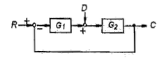
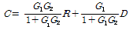
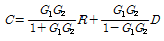
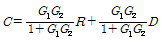
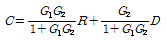
(정답률: 67%)
23. 전압의 구분으로 잘못된 것은?(관련 규정 개정전 문제로 여기서는 기존 정답인 1번을 누르면 정답 처리됩니다. 자세한 내용은 해설을 참고하세요.)
- 직류 650V 이상은 고압이다.
- 교류 600V 이하는 저압이다.
- 교류 600V를 초과하고 7000V 이하는 고압이다.
- 7000 V를 초과하면 특고압이다.
(정답률: 85%)
24. 온도 측정을 위하여 사용하는 소자로서 온도-저항 부특성을 가지는 일반적인 소자는?
- 노즐플래퍼
- 서미스터
- 앰플리다인
- 트랜지스터
(정답률: 88%)
25. 제어계의 안정도를 판별하는 가장 보편적인 방법으로 볼수 없는 것은?
- 루드의 안정 판별법
- 홀비쯔의 안정 판별법
- 나이퀴스트의 안정 판별법
- 볼츠만의 안정 판별법
(정답률: 65%)
26. 다음 단상 유도전동기 중 기동토크가 가장 큰 것은?
- 세이딩 코일형
- 콘덴서 기동형
- 분상 기동형
- 반발 기동형
(정답률: 79%)
27. 공기 중에서 3×10-4Wb와 5×10-3Wb의 두 극 사이에 작용하는 힘이 13N 이었다. 두 극사이의 거리는 약 몇 cm 인가?(오류 신고가 접수된 문제입니다. 반드시 정답과 해설을 확인하시기 바랍니다.)
- 4.3
- 8.5
- 13
- 17
(정답률: 55%)
28. 직류 전압계의 내부저항이 500Ω, 최대 눈금이 50 V라면 이 전압계에 3kΩ의 배율기를 접속하여 전압을 측정할 때 최대 측정치는 몇 V 인가?
- 250
- 300
- 350
- 500
(정답률: 66%)
29. 빛이 닿으면 전류가 흐르는 다이오드를 광량의 변화를 전류값으로 대치하므로 광센서에 주로 사용하는 다이오드는?
- 제너다이오드
- 터널다이오드
- 발광다이오드
- 포토다이오드
(정답률: 79%)
30. 다이오드를 여러 개 병렬로 접속하는 경우에 대한 설명으로 옳은 것은?
- 과전류로부터 보호할 수 있다.
- 과전압으로부터 보호할 수 있다.
- 부하측의 맥동률을 감소시킬 수 있다.
- 정류기의 역방향 전류를 감소시킬 수 있다.
(정답률: 76%)
31.
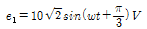
와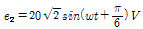
의 두 정현파의 합성전압 e는 약 몇 V 인가?- 29.1sin(wt+60°)
- 29.1sin(wt-60°)
- 29.1sin(wt+40°)
- 29.1sin(wt-40°)
(정답률: 47%)
32. 그림과 같은 회로에서 단자 a, b 사이에 주파수 f Hz의 정현파 전압을 가했을 때 전류계 A1, A2 의 값이 같았다. 이 경우 f, L, C 사이의 관계로 옳은 것은?
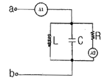
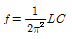
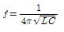
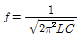
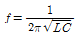
(정답률: 86%)
33. 기전력 3.6 V,용량 600 mAh인 측전지 5개를 직렬 연결할 때의 기전력 V와 용량은?
- 3.6 V, 3 Ah
- 18 V, 3 Ah
- 3.6 V, 600 mAh
- 18 V, 600 mAh
(정답률: 62%)
34. 변압기와 관련된 설명으로 옳지 않은 것은?
- 2개의 코일 사이에 작용하는 전자유도작용에 의해 변압하는 기능이다.
- 1차측과 2차측의 전압비를 변압비라 한다.
- 자속을 발생시키기 위해 필요한 전류를 유도기전력이라 한다.
- 변류비는 권수비와 반비례한다.
(정답률: 52%)
35. 교류전압과 전류의 곱 형태로 된 전력값은?
- 유효전력
- 무효전력
- 소비전력
- 피상전력
(정답률: 70%)
36. 자기인덕턴스 L1, L2가 각각 4mH, 9mH 인 두 코일이 이상적인 결합이 되었다면 상호인덕턴스 M은? (단, 결합계수 K=1 이다.)
- 6 mH
- 12 mH
- 24 mH
- 36 mH
(정답률: 76%)
37. 10kΩ 저항의 허용 전력은 10kW라 한다. 이때의 허용전류는 몇 A 인가?
- 100 A
- 10 A
- 1 A
- 0.1 A
(정답률: 75%)
38. 그림과 같은 시퀀스 제어회로에서 자기유지접점은?
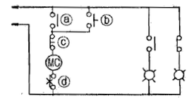
- ⓐ
- ⓑ
- ⓒ
- ⓓ
(정답률: 68%)
39. Q(C)의 전하에서 나오는 전기력선의 층수는? (단, ε및 E는 유전율 및 전계의 세기를 나타낸다.)
- ε/Q
- Q/ε
- EQ
- Q
(정답률: 71%)
40. 바이폴라 트랜지스처(BJT)와 비교할 때 전계효과 트랜지스터(FET)의 일반적인 특성을 잘못 설명한 것은?
- 소자특성은 단극성 소자이다.
- 입력저항은 매우 크다.
- 이득대역폭은 작다.
- 집적도는 낮다.
(정답률: 62%)
3과목: 소방관계법규
41. 지정수량의 몇 배 이상의 위험물을 취급하는 제조소에는 피뢰침을 설치하여야 하는가? (단, 제6류 위험물을 취급하는 위험물제조소는 제외)
- 5배
- 10배
- 50배
- 100배
(정답률: 82%)
42. 1급 소방안전관리대상물의 공공기관 소방안전관리자에 대한 강습교육의 과목과 시간으로 옳지 않은 것은?
- 방염성능기준 및 방염대상물품 - 1시간
- 소방관계법령 - 4시간
- 구조 및 응급처지교육 - 4시간
- 소방실무 - 21시간
(정답률: 44%)
43. 소방특별조사의 세부 항목에 대한 사항으로 옳지 않은 것은?
- 소방대상물 및 관계지역에 대한 강제처분ㆍ피난명령에 관한 사항
- 소방안전관리 업무 수행에 관한 사항
- 자체점검 및 정기적 점검 등에 관한 사항
- 소방계획서의 이행에 관한 사항
(정답률: 70%)
44. 위험물시설의 설치 및 변경에 있어서 허가를 받지 아니하고 제조소 등을 설치하거나 그 위치, 구조 또는 설비를 변경 할 수 없는 경우는?
- 주택의 난방시설(공동주택의 중앙난방시설은 제외)을 위한 저장소 또는 취급소
- 농예용으로 필요한 난방시설 또는 건조시설을 위한 20배 이하의 저장소
- 공업용으로 필요한 난방시설 또는 건조시설을 위한 20배 이하의 저장소
- 수산용으로 필요한 난방시설 또는 건조시설을 위한 20배 이하의 저장소
(정답률: 66%)
45. 옥외탱크저장소에 설치하는 방유제의 설치기준으로 옳지 않은 것은?
- 방유제 내의 면적은 60000m2이하로 할 것
- 방유제의 높이는 0.5m이상 3m이하로 할 것
- 방유제 내의 옥외저장탱크의 수는 10 이하로 할 것
- 방유제는 철근콘크리트 또는 흙으로 만들 것
(정답률: 73%)
46. 특수가연물의 저장 및 취급 기준으로 옳지 않은 것은?
- 품명별로 구분하여 쌓을 것
- 쌓는 높이는 10m 이하로 할 것
- 쌓는 부분의 바닥면적은300m2이하가 되도록 할 것
- 쌓는 부분의 바닥면적 사이는 1m 이상이 되도록 할 것
(정답률: 74%)
47. 소방시설의 하자가 발생한 경우 소방시설공사업자는 관계인으로부터 그 사실을 통보 받은 날로부터 며칠 이내에 이를 보수하거나 보수일정을 기록한 하자보수계획을 관계인에게 알려야 하는가?
- 3일 이내
- 5일 이내
- 7일 이내
- 14일 이내
(정답률: 72%)
48. 소방대상물의 관계인에 해당하지 않는 사람은?
- 소방대상물의 소유자
- 소방대상물의 점유자
- 소방대상물의 관리자
- 소방대상물을 검사 중인 소방공무원
(정답률: 81%)
49. 건축허가 등의 동의 대상물로서 건축허가 등의 동의를 요구하는 때 동의요구서에 첨부하여야 하는 서류로서 옳지 않은 것은?
- 건축허가신청서 및 건축허가서
- 소방시설설계업 등록증과 자본금 내역서
- 소방시설 설치계획표
- 소방시성(기계ㆍ전기분야)의 층별 평면도 및 층별 계통도
(정답률: 72%)
50. 위험물 제조소에는 보기 쉬운 곳에 “위험물 제조소” 라는 표시를 한 표지를 기준에 따라 설치하여야 하는데 다음중 표지의 기준으로 적합한 것은?
- 표지의 한 변의 길이는 0.3m 이상, 다른 한 변의 길이는 0.6m이상인 직사각형으로 하며, 표지의 바탕은 백색으로 문자는 흑색으로 한다.
- 표지의 한 변의 길이는 0.2m 이상, 다른 한 변의 길이는 0.4m이상인 직사각형으로 하며, 표지의 바탕은 백색으로 문자는 흑색으로 한다.
- 표지의 한 변의 길이는 0.2m 이상, 다른 한 변의 길이는 0.4m이상인 직사각형으로 하며, 표지의 바탕은 흑색으로 문자는 백색으로 한다.
- 표지의 한 변의 길이는 0.3m 이상, 다른 한 변의 길이는 0.6m이상인 직사각형으로 하며, 표지의 바탕은 흑색으로 문자는 백색으로 한다.
(정답률: 78%)
51. 승강기 등 기계장치에 의한 주차시설로서 자동차 몇 대 이상 주차할 수 있는 시설을 할 경우, 소방본부장 또는 소방서장의 건축허가 등의 동의를 받아야 하는가?
- 10대
- 20대
- 30대
- 50대
(정답률: 78%)
52. 각 시ㆍ도의 소방업무에 필요한 경비의 일부를 국가가 보조하는 대상이 아닌 것은?
- 전산설비
- 소방헬리콥터
- 소방관서용 청사 건축
- 소방용수시설장비
(정답률: 56%)
53. 주유취급소의 고정주유설비의 주위에는 주유를 받으려는 자동차 등이 출입할 수 있도록 너비와 길이는 몇 m 이상의 콘크리트 등으로 포장한 공지를 보유하여야 하는가?
- 너비 10m이상, 길이 5m이상
- 너비 10m이상, 길이 10m이상
- 너비 15m이상, 길이 6m이상
- 너비 20m이상, 길이 8m이상
(정답률: 62%)
54. 소방본부장이나 소방서장이 소방시설공사가 공사감리 결과보고서대로 완공되었는지 완공검사를 위한 현장 확인할 수 있는 대통령령으로 정하는 특정소방대상물이 아닌 것은?
- 노유자시설
- 문화집회 및 운동시설
- 1000m2미만의 공동주택
- 지하상가
(정답률: 70%)
55. 공동 소방안전관리자 선임대상 특정소방대상물의 기준으로서 옳은 것은?
- 복합건축물로서 연면적이 1000m2이상인 것 또는 층수가 10층 이상인 것
- 복합건축물로서 연면적이 2000m2이상인 것 또는 층수가 10층 이상인 것
- 복합건축물로서 연면적이 3000m2이상인 것 또는 층수가 5층 이상인 것
- 복합건축물로서 연면적이 5000m2이상인 것 또는 층수가 5층 이상인 것
(정답률: 66%)
56. 위험물을 취급하는 건축물에 설치하는 채광 및 조명설비 설치의 원칙적인 기준으로 적합하지 않은 것은?
- 모든 조명등은 방폭등으로 할 것
- 전선은 내화 내열전선으로 할 것
- 점멸스위치는 출입구 바깥 부분에 설치할 것
- 채광설비는 불연재료로 할 것
(정답률: 64%)
57. 다음 중 화재원인조사의 종류가 아닌 것은?
- 발화원인조사
- 재산피해조사
- 연소상황조사
- 피난상황조사
(정답률: 75%)
58. 자동화재속보설비를 설치하여야 하는 특정소방대상물은?
- 연면적 800m2인 아파트
- 연면적 800m2인 기숙사
- 바닥면적이 1000m2인 층이 있는 발전시설
- 바닥면적이 500m2인 층이 있는 노유자시설
(정답률: 60%)
59. 제품검사에 합격하지 않은 제품에 합격표시를 하거나 합격표시를 위조 또는 변조하여 사용한 사람에 대한 벌칙은?(관련 규정 개정전 문제로 여기서는 기존 정답인 1번을 누르면 정답 처리됩니다. 자세한 내용은 해설을 참고하세요.)
- 300만원 이하의 벌금
- 500만원 이하의 벌금
- 1000만원 이하의 벌금
- 1500만원 이하의 벌금
(정답률: 69%)
60. 소방시설관리업의 기술인력으로 등록된 소방기술자는 실무교육을 몇 년마다 1회 이상 받아야 하며, 실무교육기관의 장은 교육일정 몇 일전까지 교육대상자에게 알려야 하는가?
- 2년, 7일전
- 3년, 7일전
- 2년, 10일전
- 3년, 10일전
(정답률: 76%)
4과목: 소방전기시설의 구조 및 원리
61. 배기가스가 다량으로 체류하는 장소인 차고에 적응성이 없는 감지기는?
- 차등식 스포트형 1종 감지기
- 차등식 스포트형 2종 감지기
- 차등식 분포형 1종 감지기
- 정온식 1종 감지기
(정답률: 61%)
62. 무선통신보조설비의 누설동축케이블 또는 동축케이블의 임피던스는 몇 Ω으로 하여야 하는가?
- 5Ω
- 10Ω
- 50Ω
- 100Ω
(정답률: 82%)
63. 비상방송설비의 음향장치 설치기준으로 틀린 것은?
- 실내에 설치하지 않는 확성기의 음성입력은 3W(실내는 1W) 이상일 것
- 음량조정기를 설치하는 경우 음량조정기의 배선은 3선식으로 할 것
- 조작부의 조작스위치는 바닥으로부터 0.5m 이상 1.0m이하로 할 것
- 확성기는 각 층마다 설치하되 그 층의 각 부분으로부터 하나의 확성기까지의 수평거리가 25m 이하가 되도록 할 것
(정답률: 83%)
64. 부착 높이가 4m 미만으로 연기감지기 3종을 설치할 때 바닥면적 몇 m2 마다 1개 이상 설치하여야 하는가?
- 150m2
- 100m2
- 75m2
- 50m2
(정답률: 49%)
65. 비상조명등을 60분 이상 유효하게 작동시킬 수 있는 용량의 비상전원을 확보하여야 하는 장소가 아닌 것은?
- 지하층을 제외한 층수가 11층 이상의 층
- 지하층으로 용도가 도매시장소매시장인 경우
- 무창층으로 용도가 무도장인 경우
- 지하층으로 용도가 지하역사 또는 지하상가인 경우
(정답률: 70%)
66. 부착 높이에 따른 감지기의 종류로서 옳지 않는 것은?
- 4m 미만 : 차동식 스포트형
- 4m 이상 8m 미만 : 보상식 스포트형
- 8m 이상 15m 미만 : 열복합형
- 15m 이상 20m 미만 : 연기복합형
(정답률: 50%)
67. 복도통로유도등의 설치기준으로 틀린 것은?
- 바닥으로부터 높이 15m 이하의 위치에 설치할 것
- 구부러진 모퉁이 및 보행거리 20m 마다 설치할 것
- 지하역사, 지하상가인 경우에는 복도 통로 중앙부분의 바닥에 설치할 것
- 바닥에 설치하는 통로유도등은 하중에 따라 파괴되니 아니하는 강도의 것으로 할 것
(정답률: 73%)
68. 자동화재속보설비의 속보기는 자동화재탐지설비로부터 작동신호를 수신하거나 수동으로 동작시키는경우 20초 이내에 소방관서에 자동적으로 신호를 발하여 통보하되, 몇회 이상 속보할 수 있어야 하는가?
- 2회
- 3회
- 4회
- 5회
(정답률: 85%)
69. 자동화재탐지설비에는 그 설비에 대한 감시상태를 위하여 축전지설비를 설치하여야 한다. 다음 중 기준으로 옳은 것은? (단, 지상 15층인 소방대상물로서 상용전원이 축전지 설비가 아닌 경우이다.)
- 자동화재탐지설비에는 그 설비에 대한 감시상태를 20분간 지속한 후 유효하게 5분 이상 경보할 수 있는 축전지설비를 설치하여야 한다.
- 자동화재탐지설비에는 그 설비에 대한 감시상태를 30분간 지속한 후 유효하게 15분 이상 경보할 수 있는 축전지설비를 설치하여야 한다.
- 자동화재탐지설비에는 그 설비에 대한 감시상태를 50분간 지속한 후 유효하게 20분 이상 경보할 수 있는 축전지설비를 설치하여야 한다.
- 자동화재탐지설비에는 그 설비에 대한 감시상태를 60분간 지속한 후 유효하게 10분 이상 경보할 수 있는 축전지설비를 설치하여야 한다.
(정답률: 86%)
70. 소방대상물 각 부분에서 하나의 발신기까지의 수평거리는 몇 m 이며 복도 또는 별도로 구획된 실에 발신기를 설치하는 경우에는 보행거리를 몇 m 로 해야 하는가?
- 수평거리 15m 이하 , 보행거리 30m 이상
- 수평거리 25m 이하 , 보행거리 30m 이상
- 수평거리 15m 이하 , 보행거리 40m 이상
- 수평거리 25m 이하 , 보행거리 40m 이상
(정답률: 57%)
71. 누전경보기의 전원은 배선용 차단기에 있어서는 몇 A 이하의 것으로 각 극을 개폐할 수 있어야 하는가?
- 10 A
- 20 A
- 30 A
- 40 A
(정답률: 80%)
72. 누전경보기의 수신부 설치 제외 장소가 아닌 것은?
- 온도의 변화가 급격한 장소
- 대전류회로ㆍ고주파 발생회로 등에 의한 영향을 받을 우려가 있는 장소
- 가연성 증기, 가스, 먼지 등이나 부식성의 증기, 가스 등이 다량으로 체류하는 장소
- 방폭, 방온, 방습, 방진 및 정전기차폐 등의 방호조치를 한 장소
(정답률: 83%)
73. 비상조명등의 설치기준에 대한 설명으로 틀린 것은?
- 지하층을 제외한 층수가 11층 이상의 층의 비상전원은 30분 이상의 용량으로 할 것
- 예비전원 비내장 비상조명등의 비상전원은 자가발전기설비 또는 축전지설비를 설치할 것
- 비상전원을 실내에 설치하는 때에는 그 실내에 비상조명등을 설치할 것
- 비상조명등의 조도는 설치된 장소의 각 부분 바닥에서 1lx 이상이 되도록 할 것
(정답률: 72%)
74. 일반전기사업자로부터 특고압 또는 고압으로 수전하는 비상전원 수전설비의 경우에 있어 소방회로배선과 일반회로 배선을 몇 cm 이상 떨어져 설치하는 경우 불연성 벽으로 구획하지 않을 수 있는가?
- 5cm
- 10cm
- 15cm
- 20cm
(정답률: 63%)
75. 비상방송설비의 음향장치에 있어서 기동장치에 따른 화재신고를 수신한 후 필요한 음량으로 화재발생 상황 및 피난에 유효한 방송이 자동으로 개시될 때까지의 소요시간의 기준으로 옳은 것은?
- 30초 이하
- 20초 이하
- 10초 이하
- 5초 이하
(정답률: 82%)
76. 비상콘센트설비의 전원설치기준 등에 대한 설명으로 옳지 않은 것은?
- 상용전원으로부터 전력의 공급이 중단된 때에는 자동으로 비상전원으로부터 전력을 공급 받을 수 있도록 할 것
- 전원회로는 각층에 있어서 하나의 회로만 설치 할 것
- 비상콘센트설비의 비상전원의 용량은 20분 이상으로 할 것
- 비상전원의 설치장소는 다음 장소와 방화구획 할 것
(정답률: 70%)
77. 누전경보기 수신부의 절연된 충전부와 외항간의 절연저항은 최소 몇 MΩ 이상 이어야 하는가?
- 5 MΩ
- 3 MΩ
- 1 MΩ
- 0.2 MΩ
(정답률: 72%)
78. 무선통신보조설비의 누설동축케이블 및 공중선은 고압의 전로로부터 일정한 간격을 유지하여야 하나 그렇게 하지 않아도 되는 경우는?
- 정전기 차폐장치를 유효하게 설치한 경우
- 금속제 등의 지지금구로 일정한 간격으로 고정한 경우
- 끝부분에 무반사 종단저항을 설치한 경우
- 불연재료로 구획된 반자안에 설치한 경우
(정답률: 72%)
79. 통로유도등은 어떤 색상으로 표시하여야 하는가?
- 백색바탕에 녹색으로 피난방향 표시
- 백색바탕에 적색으로 피난방향 표시
- 녹색바탕에 백색으로 피난방향 표시
- 적색바탕에 백색으로 피난방향 표시
(정답률: 73%)
80. 자동화재탐지설비의 경계구역에 대한 설명 중 옳은 것은?
- 1000m2 이하의 범위 내에서는 2개의 층을 하나의 경계구역으로 할 수 있다.
- 하나의 경계구역의 면적은 600m2 이하로 하고 한 변의 길이는 50m 이하로 한다.
- 당해 소방대상물의 주된 출입구에서 그 내부 정체가 보이는 경우에는 경계구역의 면적은 1200m2 이하로 할 수 있다.
- 지하구의 경우 하나의 경계구역의 길이는 1000m 이하로 한다.
(정답률: 74%)
목조건축물 화재는 일반적으로 고온, 단시간형이다. 이는 목재의 빠른 연소와 높은 열방출로 인해 발생한다. 또한 목재는 내화성이 낮기 때문에 내화건축물에 비해 더 높은 온도에서 빠르게 연소되며, 화재 발생 후 진화가 어렵다는 특징이 있다. 따라서 목조건축물의 화재 예방과 대처는 매우 중요하다.